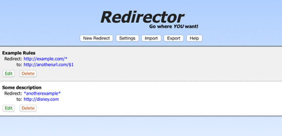

The WebExtensions API, which is essentially the extension API in Google Chrome and Opera. I thought this was interesting. I've developed a couple of Chrome extensions, and I like their extension API.
The UI for Redirector was written in HTML, so in theory I could have stuck with the same UI, but it was really ugly, and I wanted to learn a bit more about angular.js, so I decided to write a completely new UI using Angular.
I started by re-writing Redirector as a Chrome extension, testing it on Chrome and making sure it worked correctly there. That was easy, the WebExtensions API has a WebRequest object that is essentially built for doing exactly what Redirector does, listening to requests and redirecting them.
So getting the extension working on Chrome working was fun, the API worked well and I was happy with the UI. Once Chrome worked I tested on Opera and that didn't need any changes at all, it just worked exactly like on Chrome. So the only browser left was Firefox!

Porting to Firefox
At this point WebExtensions support in Firefox had only been announced a couple of weeks previously, and it was only available in the Nightly development build. I started by testing the extension as it was, but it was clear that the Firefox implementation was nowhere near ready. The redirecting worked, but the toolbar button had some serious issues, and I had another problem, which was that the WebExtensions API has no file system access, and I wanted to automatically migrate existing users of Redirector, and for that I needed to access the Redirector.rjson file which stores their redirects. I also figured that WebExtensions might not be released and supported by addons.mozilla.org until well after multiprocess Firefox was released, which would mean the extension would stop working for weeks or months.
At this point I was really interested in finishing the rewrite and getting a working new version out there. So I started thinking that I could release an interim version for Firefox, which would use the old Firefox extension model, but include the new UI. A bonus would be that it would have filesystem access and could migrate the existing redirects of users to some place where in the future the WebExtensions API could load them from.
Firefox has their own Add-on SDK to simplify writing extensions. It makes the experience a lot nicer than it was back in 2007 when I was writing my extensions, but it doesn't give you the same full access to the browser internals as the old extension model did. Nevertheless, it's a nice API and I decided to use that to make the interim version of Redirector for Firefox. I didn't want to maintain two different branches of the code though, so I thought it would be interesting to try to use the same code in all versions of the extension, even though one was using WebExtensions and the other was using the Firefox Add-on SDK.
The result
The result of all this is Redirector 3.0.3, available for Chrome, Firefox and Opera. This was a fun little project, and I'm happy with the results. When WebExtensions support in Firefox is ready I'll just remove all the polyfill code and then I'll (hopefully) have the exact same code for all the browsers. There are also rumours that the new Edge browsers from Microsoft will have a similar extension models, so maybe Redirector will be available for that at some point as well!